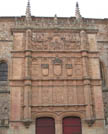

El mecenazgo artístico de los Reyes Católicos (I)
(Haz clic en las imágenes para verlas con más detalle. En algunos casos, hacer clic una segunda vez permite ampliarlas aún más.)
Pintura hispano-flamenca |
Pintura de la escuela hispano-flamenca
El estilo pictórico que dominó en la segunda mitad del siglo XV en la Península Ibérica tenía su origen en Flandes. Ciertas innovaciones técnicas, sobre todo el uso de óleo, permitieron un detallismo antes jamás logrado. Los pintores flamencos se recrearon en la detallada representación de elementos naturales y arquitectónicos que adornan el tema central de sus cuadros, normalmente de escenas piadosas. Entre los pintores flamencos de más renombre destacan los hermanos Van Eyck, Roger van der Weyden y Hans Memling. Su estilo se haría característico de la pintura en el ducado de Borgoña, cuyos dirigentes también eran señores de Flandes y los Países Bajos. En el siglo XV, se patrocinaban obras de pintores flamencos y se estimulaba la imitación de modelos franco-flamencos (es decir, borgoñones) entre los pintores de la península —de ahí la llamada "escuela hispano-flamenca"—. Este interés por el arte de los Países Bajos coincidió con los crecientes lazos económicos y políticos entre Castilla y Aragón, por un lado, y el ducado de Borgoña, por otro, algo que será de suma importancia bajo los Reyes Católicos. Abajo, a la izquierda, un retablo (ing. altarpiece) de Roger van der Weyden de c. 1440, el “Tríptico de Miraflores”, comprado por Juan II de Castilla (padre de Isabel I) para el monasterio de Miraflores cerca de Burgos. La segunda imagen es un retablo de Hans Memling de 1475, el “Tríptico Donne”, que muestra la típica situación de la escena piadosa con los donantes a ambos lados. Éste es el formato que se adopta en el famoso cuadro del pintor español Fernando Gallego comisionado por Isabel y Fernando entre 1490 y 1495, arriba. A cada lado de la Virgen, y delante de los dos santos (Sto. Tomás de Aquino y Sto. Domingo), están los dos reyes. (Nótese que el pintor los ha representado de la misma estatura, quizás para evocar su supuesta igualdad en el gobierno de sus reinos.) La tercera imagen abajo es de uno de los pintores de más renombre de la escuela hispano-flamenca, el cordobés Bartolomé Bermejo: un retablo de la Virgen de Montserrat, patrona de Cataluña, de 1485. Tiene el mismo detallismo y estilo de los elementos arquitectónicos que los cuadros flamencos. |
{kind=link}
{kind=link}
{kind=link}
{kind=link}
Retablo Mayor de la Catedral de Sevilla
No se sabe nada de la biografía del autor de este retablo (ing. altarpiece), un tal Pierre Dancart, posiblemente de origen borgoñón. Su obra maestra, a la que dedicó toda su vida, es el Retablo Mayor de la Catedral de Sevilla, iniciado en 1482 bajo Isabel I y completado en 1526, bajo Carlos V. El crecimiento de Sevilla como el centro económico más importante de Castilla coincide con la construcción de su masiva catedral, símbolo del poder de los reyes que la financiaron, de la influencia de la Iglesia Católica en la vida política de Castilla y el predominio comercial de la ciudad. El estilo del retablo, el mayor del mundo, es del gótico tardío (o flamígero). Abunda la ornamentación —sobre todo las formas puntiagudas de la arquitectura gótica— y el uso del dorado para cubrir la madera tallada. El retablo representa cuarenta y cinco escenas de la vida de Jesucristo. (En la imagen aquí es difícil ver los detalles.) Refleja también la persistencia del estilo gótico en lugares de Europa fuera de Italia, donde las nuevas tendencias artísticas del Renacimiento se notaban ya a principios del siglo XV. |
{kind=link}
Arquitectura de estilo plateresco
Bajo los Reyes Católicos, se desarrolla un estilo arquitectónico que será característico en Castilla y Aragón durante las primeras décadas del siglo XVI, el llamado estilo plateresco, así denominado porque la ornamentación parece propia del trabajo de los plateros (ing. silversmiths). Este estilo representa una fusión de técnicas y materiales mudéjares, elementos góticos (la abundancia de ornamentación y algunos motivos arquitectónicos como las agujas típicas en los tejados y torres góticas) y motivos más propios de la arquitectura neoclásica que se asocia con el Renacimiento italiano (arcos redondeados y ornamentos de la antigüedad romana, como elementos vegetales y caras grotescas). La obra de estilo plateresco más emblemática es la fachada de la Universidad de Salamanca, diseñada durante el reinado de Carlos V. En la parte inferior Isabel y Fernando están representados en un medallón (arriba). |
 |
{kind=link}
{kind=link}